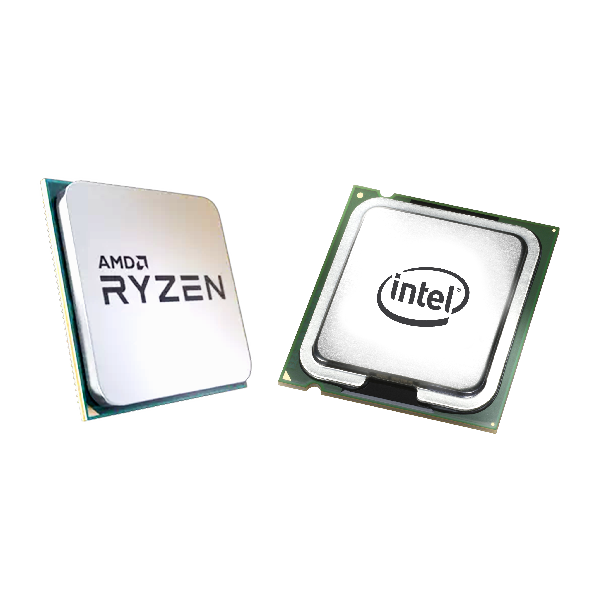
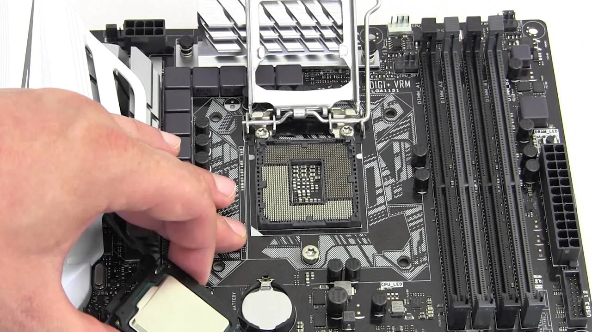

El Procesador CPU
El cerebro de toda computadora. Aprende qué es, cómo funciona, sus partes, marcas y cómo elegir el mejor para tus necesidades.

¿Qué es un Procesador?
Un procesador, también llamado CPU (Central Processing Unit o Unidad Central de Procesamiento), es el componente principal de una computadora. Es el encargado de ejecutar todas las instrucciones que recibe de los programas y del sistema operativo.
Imagina que la computadora es una persona: si el disco duro es la memoria a largo plazo y la RAM es la memoria de trabajo inmediata, el procesador sería el cerebro que piensa, toma decisiones y realiza cálculos.
El CPU es el componente sin el cual ninguna computadora puede funcionar. Todo lo que ocurre en la pantalla, desde abrir un archivo hasta reproducir un video, pasa primero por el procesador.
El procesador es un chip de silicio extremadamente pequeño que contiene miles de millones de transistores microscópicos. Estos transistores son interruptores eléctricos que trabajan juntos para procesar información de manera increíblemente rápida.

El CPU se instala directamente en el socket de la tarjeta madre.
¿Para qué sirve el CPU?
El procesador realiza tres tipos de operaciones esenciales que hacen funcionar todo el sistema.
Procesar Instrucciones
Ejecuta millones de instrucciones por segundo provenientes del sistema operativo y las aplicaciones. Cada vez que haces clic o escribes, el CPU interpreta y realiza la acción correspondiente.
Realizar Cálculos
Efectúa operaciones matemáticas y lógicas a altísima velocidad. Desde sumar números hasta renderizar imágenes 3D, todo implica millones de cálculos realizados por el CPU cada segundo.
Coordinar Componentes
Actúa como director de orquesta, coordinando la RAM, el disco duro, la tarjeta gráfica y todos los demás componentes para que trabajen juntos de manera sincronizada y eficiente.
Breve Historia del Procesador
Desde un chip de 2,300 transistores hasta los modernos CPUs con miles de millones, la evolución ha sido extraordinaria.
Intel 4004 — El primer microprocesador
Intel lanzó el primer microprocesador comercial con 2,300 transistores. Funcionaba a 740 kHz y era tan potente como las primeras computadoras del tamaño de una habitación.
Intel 8086 — La arquitectura x86 nace
El Intel 8086 estableció la arquitectura x86 que sigue siendo la base de los procesadores modernos para PC. Operaba a 5–10 MHz.
Intel Pentium — La era del hogar
El Pentium popularizó las PC en los hogares con velocidades de 60 a 300 MHz. Su nombre se convirtió en sinónimo de "computadora potente" para millones de personas.
AMD Athlon 64 — La era de 64 bits
AMD lanzó el primer procesador de 64 bits para el mercado doméstico, permitiendo usar más de 4 GB de RAM y procesando datos en bloques más grandes.
Procesadores de múltiples núcleos
Intel y AMD lanzaron sus primeros procesadores con 2 y 4 núcleos, permitiendo ejecutar varias tareas de forma simultánea y revolucionando el rendimiento general.
Miles de millones de transistores a 3nm
Los procesadores modernos integran hasta 100,000 millones de transistores en nódulos de 3 nanómetros, con hasta 24 núcleos en CPUs de consumo y frecuencias de más de 6 GHz.
¿Cómo funciona el CPU?
El procesador sigue un ciclo continuo de cuatro etapas para ejecutar cada instrucción.
Este ciclo ocurre miles de millones de veces por segundo. Un procesador a 4 GHz ejecuta este ciclo completo hasta 4,000 millones de veces cada segundo. Cada núcleo puede procesar múltiples instrucciones simultáneamente gracias al pipeline.
El pipeline es una técnica que permite al CPU comenzar a buscar la siguiente instrucción antes de terminar la actual, similar a una línea de ensamblaje en una fábrica. Esto multiplica la eficiencia sin aumentar la velocidad del reloj.
Todo el procesamiento ocurre gracias a transistores: interruptores microscópicos que representan 0s y 1s (apagado/encendido). Un CPU moderno puede tener más de 50,000 millones de transistores.
Partes Básicas del Procesador
Conoce los elementos internos que determinan el rendimiento de un CPU.
Núcleos (Cores)
Los núcleos son unidades de procesamiento independientes dentro del mismo chip. Cada núcleo puede ejecutar tareas de forma autónoma. Más núcleos permiten realizar más tareas simultáneamente sin que el sistema se ralentice.
Hilos (Threads)
Los hilos son flujos de ejecución virtuales. Con la tecnología Hyper-Threading (Intel) o SMT (AMD), cada núcleo puede manejar dos hilos simultáneamente, haciendo que el sistema operativo lo vea como si hubiera el doble de núcleos.
Caché
La caché es una memoria ultrarrápida integrada dentro del propio CPU. Almacena datos que el procesador usa con frecuencia para no tener que acceder constantemente a la RAM (que es más lenta). Existen tres niveles: L1, L2 y L3.
Frecuencia (GHz)
Los GHz (gigahercios) indican cuántos ciclos por segundo puede ejecutar el procesador. 1 GHz = 1,000 millones de ciclos por segundo. A mayor frecuencia, más instrucciones puede procesar en el mismo tiempo, aunque el número de núcleos también importa.
Marcas Principales
Dos empresas dominan el mercado de procesadores para PC de escritorio y portátiles.
Intel Corporation
Fundada en 1968 — Santa Clara, California
Advanced Micro Devices
Fundada en 1969 — Santa Clara, California
AMD vs Intel — Comparativa Básica
Ambas marcas son excelentes. Las diferencias están en el uso, precio y ecosistema.
Generaciones de Procesadores
Las generaciones ayudan a identificar la evolución de los procesadores y las mejoras en rendimiento, eficiencia y tecnología.
Gama Básica
Procesadores pensados para tareas sencillas como navegar por internet, usar programas de oficina y estudiar.
Gama Media
Ofrecen buen equilibrio entre rendimiento y precio. Ideales para multitarea, diseño básico y gaming.
Alto Rendimiento
Diseñados para usuarios exigentes, edición de video, programación avanzada y videojuegos pesados.
Gama Profesional
Procesadores muy potentes usados en tareas profesionales, modelado 3D, streaming y edición avanzada.
Uso Básico
Procesadores económicos para tareas diarias, estudios y navegación.
Gama Equilibrada
Muy populares por ofrecer buen rendimiento para gaming, trabajo y multitarea.
Rendimiento Alto
Orientados a usuarios avanzados, creadores de contenido y juegos exigentes.
Uso Profesional
Procesadores de máxima potencia para edición, renderizado, programación y trabajo intensivo.
Cómo Leer el Nombre de un Procesador
Cada parte del nombre de un CPU te da información importante. Aprender a leerlo te ayuda a elegir mejor.
Intel o AMD. Identifica al fabricante del procesador.
Core i7 / Ryzen 7 — indica el nivel de gama del producto.
14 = 14ª generación Intel. En AMD sería el primer número (ej: 7800).
700 — número específico del modelo dentro de la generación.
K = desbloqueado para overclocking. Determina características especiales.
¿Qué es un Socket?
El socket es el conector físico de la tarjeta madre donde se instala el procesador. Es fundamental elegir CPU y placa base con sockets compatibles.
El socket es como una "cuna" en la tarjeta madre diseñada específicamente para un tipo de procesador. Tiene contactos eléctricos que conectan el CPU con el resto de los componentes.
Importante: No todos los sockets son compatibles con todos los procesadores. Antes de comprar una CPU, verifica que el socket de tu tarjeta madre sea el correcto.
Cada generación de procesadores puede traer un socket diferente. Intel ha cambiado de socket más frecuentemente que AMD, lo que puede encarecer las actualizaciones futuras.
1700
LGA 1700
Intel 12ª, 13ª y 14ª generación (2021–2024)1851
LGA 1851
Intel Core Ultra — Meteor Lake / Arrow Lake (2024+)AM4
AMD Ryzen 1000 hasta 5000 (2017–2023). Muy popular.AM5
AMD Ryzen 7000, 8000 y 9000 (2022+). Soporte a largo plazo.Significado de las Letras
Las letras al final del nombre de un procesador revelan características clave. Aprende a interpretarlas.
Consejos para Elegir un CPU
Antes de comprar un procesador, considera estos factores para tomar la mejor decisión.
Define tu uso principal
¿Jugarás videojuegos? ¿Editarás video? ¿Solo navegarás? El uso determina cuántos núcleos y qué frecuencia necesitas realmente. Para gaming prioriza GHz; para edición, más núcleos.
Verifica la compatibilidad
Asegúrate de que el procesador sea compatible con el socket de tu tarjeta madre. Un CPU Intel no funcionará en una placa AMD y viceversa. Consulta siempre las listas de compatibilidad.
Considera el presupuesto total
El procesador es solo una parte. Si gastas todo en el CPU, te quedará poco para RAM, almacenamiento o GPU. Un CPU de gama media con buena GPU suele dar mejor experiencia gaming.
No solo mires los GHz
Un procesador a 5 GHz puede ser más lento que uno a 4 GHz si el segundo tiene mejor arquitectura (IPC) y más núcleos. Busca benchmarks actualizados antes de decidir.
Piensa en el futuro
Elige un socket con buen soporte futuro (como AM5 de AMD). Así podrás cambiar el CPU en el futuro sin cambiar la placa madre completa, ahorrando dinero en actualizaciones.
Incluye el refrigerador
Algunos CPUs incluyen refrigerador "stock", pero si compras versiones K o de alto rendimiento, deberás comprar un disipador aftermarket para mantener temperaturas seguras bajo carga.
FAQ — Procesador
Las dudas más comunes sobre CPUs resueltas de forma clara y sencilla.
¿Listo para seguir aprendiendo?
Ahora que conoces el procesador, explora los demás componentes o pon a prueba lo que aprendiste con nuestras actividades.